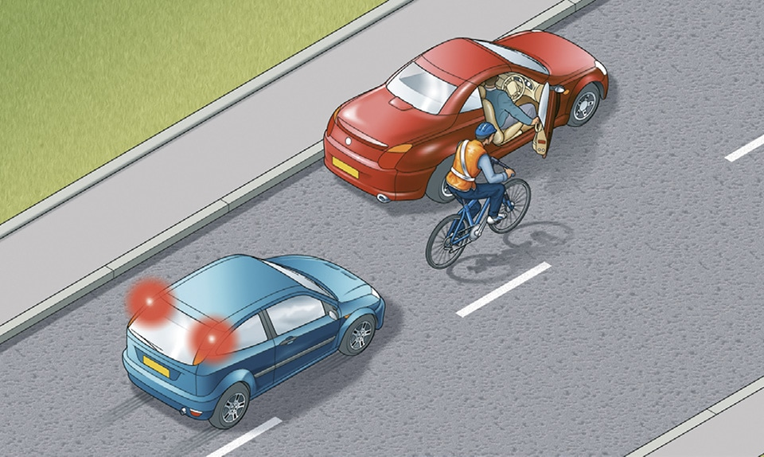

Waiting and parking (238 to 252)
|
2. Parking (239 to 247)
239
Use off-street parking areas, or bays marked out with white lines on the road as parking places, wherever possible. If you have to stop on the roadside:
When you use a hand-held device to help you to park, you MUST remain in control of the vehicle at all times. Do not use the hand-held device for anything else while you are using it to help you park, and do not put anyone in danger. Use the hand-held device according to the manufacturer’s instructions.
When using an electric vehicle charge point, you should park close to the charge point and avoid creating a trip hazard for pedestrians from trailing cables. Display a warning sign if you can. After using the charge point, you should return charging cables and connectors neatly to minimise the danger to pedestrians and avoid creating an obstacle for other road users.
Use off-street parking areas, or bays marked out with white lines on the road as parking places, wherever possible. If you have to stop on the roadside:
- do not park facing against the traffic flow
- stop as close as you can to the side
- do not stop too close to a vehicle displaying a Blue Badge: remember, the occupant may need more room to get in or out
- you MUST switch off the engine, headlights and fog lights
- you MUST apply the handbrake before leaving the vehicle
- you MUST ensure you do not hit anyone when you open your door. Check for cyclists or other traffic by looking all around and using your mirrors
- where you are able to do so, you should open the door using your hand on the opposite side to the door you are opening; for example, use your left hand to open a door on your right-hand side. This will make you turn your head to look over your shoulder. You are then more likely to avoid causing injury to cyclists or motorcyclists passing you on the road, or to people on the pavement
- it is safer for your passengers (especially children) to get out of the vehicle on the side next to the kerb
- put all valuables out of sight and make sure your vehicle is secure
- lock your vehicle.
When you use a hand-held device to help you to park, you MUST remain in control of the vehicle at all times. Do not use the hand-held device for anything else while you are using it to help you park, and do not put anyone in danger. Use the hand-held device according to the manufacturer’s instructions.
When using an electric vehicle charge point, you should park close to the charge point and avoid creating a trip hazard for pedestrians from trailing cables. Display a warning sign if you can. After using the charge point, you should return charging cables and connectors neatly to minimise the danger to pedestrians and avoid creating an obstacle for other road users.

Rule 239: Check before opening your door
240
You MUST NOT stop or park on
- the carriageway, an emergency area or a hard shoulder of a motorway except in an emergency (see Rules 270 and 271)
- a pedestrian crossing, including the area marked by the zig-zag lines (see Rule 191)
- a clearway (download ‘Traffic signs’)
- taxi bays as indicated by upright signs and markings
- an Urban Clearway within its hours of operation, except to pick up or set down passengers
- a road marked with double white lines, even when a broken white line is on your side of the road, except to pick up or set down passengers, or to load or unload goods
- a tram or cycle lane during its period of operation
- a cycle track
- red lines, in the case of specially designated ‘red routes’, unless otherwise indicated by signs. Any vehicle may enter a bus lane to stop, load or unload where this is not prohibited (see Rule 141).
Laws MT(E&W)R regs 7 & 9, MT(S)R regs 6 & 8, ZPPPCRGD regs 18 & 20, RTRA sects 5, 6 & 8, TSRGD regs 10, 26 & 27, RTA 1988 sects 21(1) & 36
241
You MUST NOT park in parking spaces reserved for specific users, such as Blue Badge holders, residents or motorcycles, unless entitled to do so.
Laws CSDPA sect 21 & RTRA sects 5 & 8
242
You MUST NOT leave your vehicle or trailer in a dangerous position or where it causes any unnecessary obstruction of the road.
Laws RTA 1988, sect 22 & CUR reg 103
243
DO NOT stop or park
- near a school entrance
- anywhere you would prevent access for Emergency Services
- at or near a bus or tram stop or taxi rank
- on the approach to a level crossing/tramway crossing
- opposite or within 10 metres (32 feet) of a junction, except in an authorised parking space
- near the brow of a hill or hump bridge
- opposite a traffic island or (if this would cause an obstruction) another parked vehicle
- where you would force other traffic to enter a tram lane
- where the kerb has been lowered to help wheelchair users and powered mobility vehicles
- in front of an entrance to a property
- on a bend
- where you would obstruct cyclists’ use of cycle facilities except when forced to do so by stationary traffic.
You MUST NOT park partially or wholly on the pavement in London, and should not do so elsewhere unless signs permit it. Parking on the pavement can obstruct and seriously inconvenience pedestrians, people in wheelchairs or with visual impairments and people with prams or pushchairs.
Law GL(GP)A sect 15
245
Controlled Parking Zones. The zone entry signs indicate the times when the waiting restrictions within the zone are in force. Parking may be allowed in some places at other times. Otherwise parking will be within separately signed and marked bays.
246
Goods vehicles. Vehicles with a maximum laden weight of over 7.5 tonnes (including any trailer) MUST NOT be parked on a verge, pavement or any land situated between carriageways, without police permission. The only exception is when parking is essential for loading and unloading, in which case the vehicle MUST NOT be left unattended.
Law RTA 1988 sect 19
247
Loading and unloading. Do not load or unload where there are yellow markings on the kerb and upright signs advise restrictions are in place (see pages 115-116). This may be permitted where parking is otherwise restricted. On red routes, specially marked and signed bays indicate where and when loading and unloading is permitted.
Law RTRA sects 5 & 8